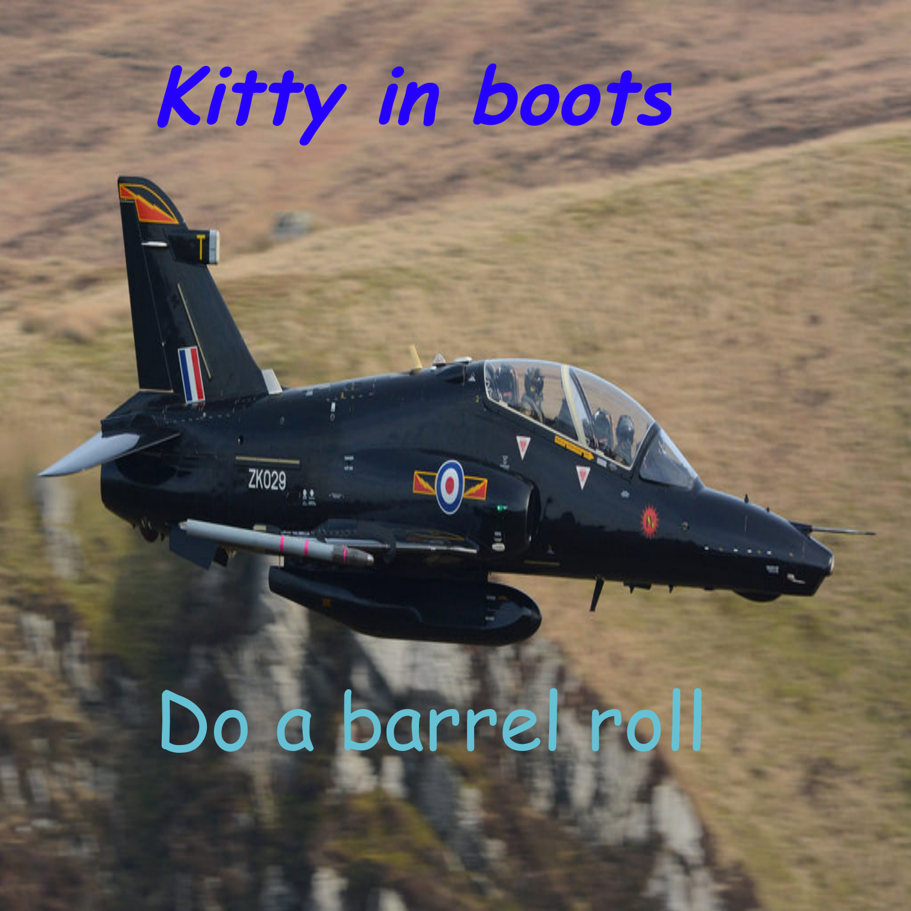

Design a Band Challenge
Context
Design thinking is the process of getting information
and empathizing with it. One way you can see design
thinking is like when people take a survey and you
improve based on their answers. We are studying
it so that it is going to be able to be used by us so
that more people like what we think. We also study
this so that we can learn about how others think.
In this project we used something called DEEP
design thinking. The first step of DEEP is discover.
In the discover step I looked for a name for the
band randomly online/wikipedia. I first found names
that other people found appealing. I then just took
what looks good to everyone and found something.
The next step is empathy this is where I asked
questions like what they liked or what is better
What font do you prefer most.
Person 1: Nam: Sans serif
Person 2: Crystal: Serif
Person 3: Adym: Sans serif
What color do you like the most
Pink, Cyan Black, White, Red Blue, Cyan Realistic or abstract Realistic Abstract Realistic With the information of other people I used a blue and cyan colors and san serif text. I also used realistic because of my studies it was a ⅔ choice.Album Cover
Context
In the year 20XX Star Fox decided to make a band so
they got katt to start the band. Inspired by the line
DO A BARREL ROLL.